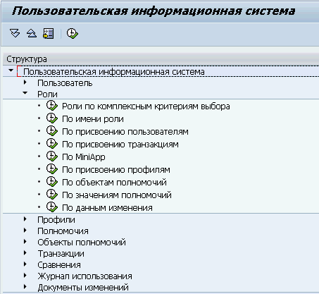
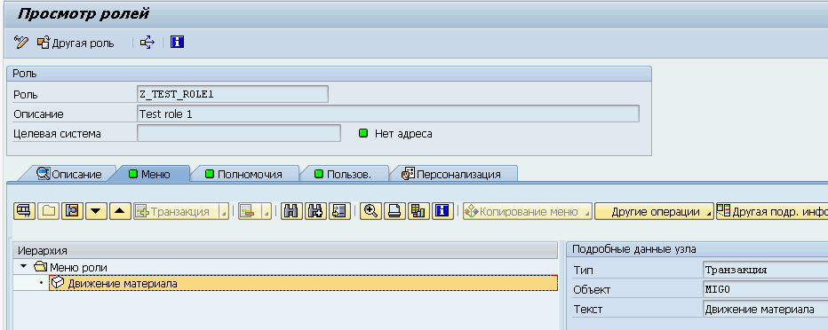
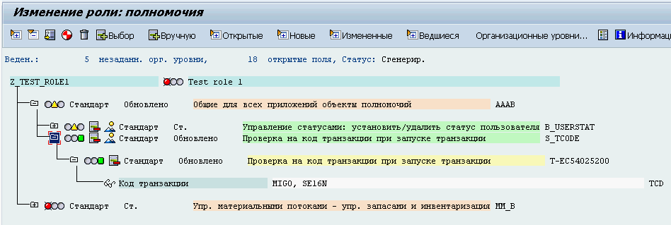
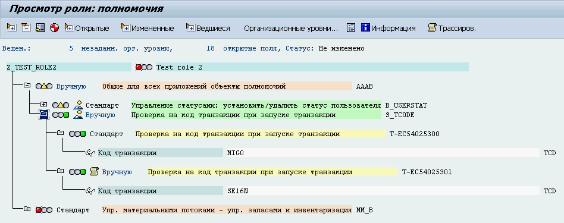
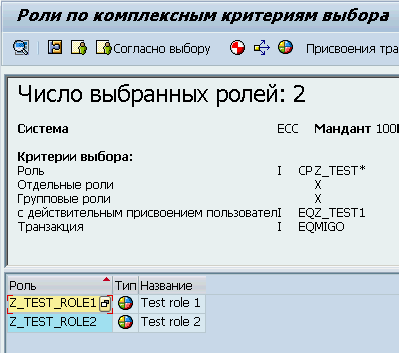
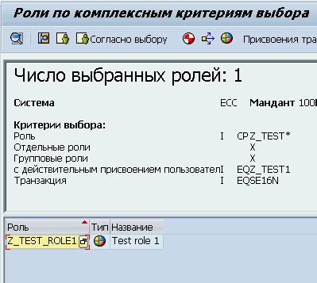
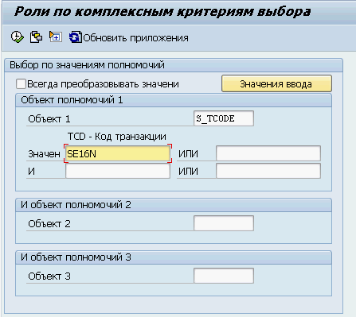
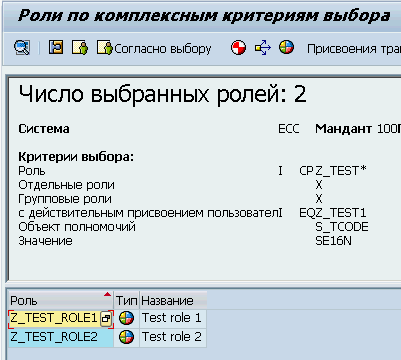
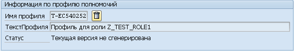
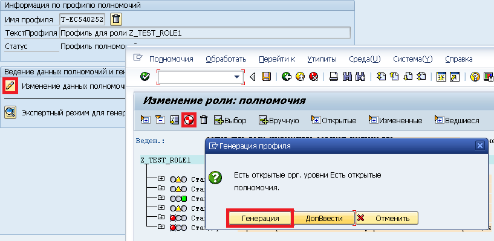

Системы SAP имеют интересную реализацию предоставления полномочий. Подробнее о Концепции авторизации SAP (SAP Authorization concept) я напишу в следующих постах. Сегодня же я хочу поговорить о тех ошибках, которые иногда совершают консультанты при работе с ролями и полномочиями в SAP NW AS ABAP.
-
Полномочия на доступ к транзакции. Нам требуется найти роль в которой содержатся полномочий к определенной транзакции или транзакциям. Для поиска таких ролей чаще всего пользуются транзакцией SUIM. suimВ данном случае ошибка состоит в том, что консультанты чаще всего пользуются вполне логичным и напрашивающимся отчетом «Роли — по присвоению транзакции». Однако он не дает полной картины ролей с полномочиями на запуск определенной транзакции. В данном случае в списке отобразятся только те роли транзакции в которых были присвоены через вкладку «Меню». Проиллюстрирую на небольшом примере. Я создал роль Z_TEST_ROLE1 и добавил на вкладке «Меню» транзакцию MIGO — Движение материалов.
 
При добавлении транзакции через «Меню» все необходимы для работы с ней объекты полномочий автоматически добавляются в роль. Затем я скопировал эту роль в новую Z_TEST_ROLE2 после чего в первую роль я добавил новую транзакцию SE16N через Меню, а во вторую вручную через добавление объекта полномочий «S_TCODE — Проверка на код транзакции при запуске» со значением поля TCD — SE16N. Вот так выглядят объекты полномочий в ролях после добавления транзакции SE16N
 
Как мы можем убедимся в список отчета «Роли — по присвоению транзакции» при поиске ролей в которых есть транзакция MIGO попадут обе мои тестовые роли, а при поиске прав на SE16 только первая в которую мы добавили полномочия через меню.
 
Правильно будет воспользоваться другим отчетом «Роли — по значения полномочий» с указанием искомых транзакций в качестве значений поля TCD объекта полномочий S_TCODE
 
-
Генерация профилей. Допустим необходимо добавить сотруднику некоторые полномочия. Мы находим нужную роль и присваиваем ее соответствующему пользователю, но его полномочия в системе не изменяются. Ошибка, в данном случае в том, что мы, присвоив пользователю роль не проверили ее профиль полномочий. Это может выглядеть, например, вот так:

Профиль полномочий — это совокупность всех объектов полномочий чаще всего привязанная к роли. Он состоит из тех объектов полномочий и их значений которые мы добавили в роль. Первоначально в роли отсутствует профиль полномочий, его нужно генерировать. Это касается как новых Z* так и стандартных ролей SAP. Каждое изменение в значениях полномочий в роли требует перегенерации ее профиля.
Генерация профиля производится через транзакцию PFCG (Role Maintenance and the Profile Generator ) на вкладке «Полномочия»

После того как профиль сгенерирован можно присваивать роль пользователю.
На этом завершу свой первый базисный пост в этом блоге. Хочу сразу оговорится, что перечисленные выше ошибки не выдуманы мной, это реальные вопросы, с которыми ко мне обращались коллеги. В следующих постах посвященных этой теме я приведу другие примеры ошибок при работе с полномочиями.
Подробнее на тему профилей и полномочий в SAP можно почитать на help.sap.com либо в wiki на SDN, например, вот тут PFCG ROLE MAINTENANCE.